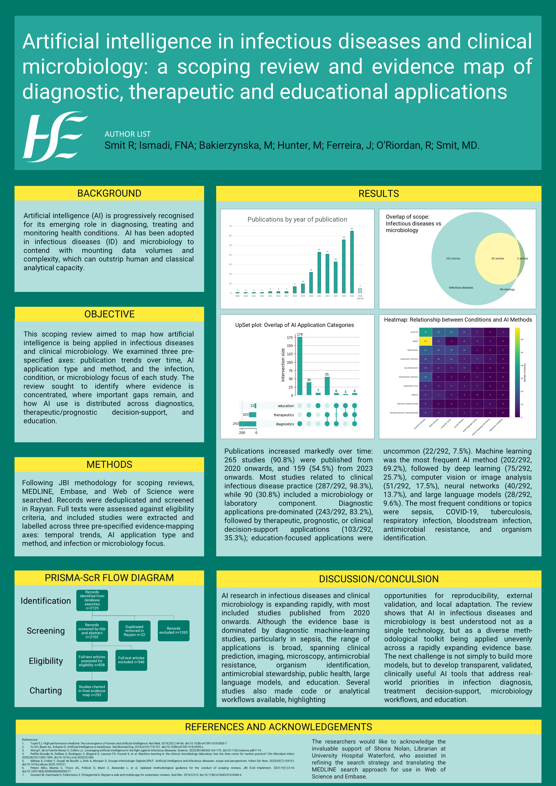

About this database
This searchable database contains studies included in a scoping review of artificial intelligence applications in infectious diseases and clinical microbiology. Records are labelled by publication year, AI method, application type, infection or condition, and clinical or laboratory focus.
Labels are non-mutually exclusive: a single study may appear under more than one label, condition, application type, or AI method.
{kind=link}
Poster
The poster summarises the scoping review methods, evidence map, and main findings.

Authors
Add your short author blurb here. For example: This work was conducted by researchers interested in infectious diseases, clinical microbiology, evidence synthesis, and the responsible use of artificial intelligence in infection care.
Search the evidence map
Filter by generated label
Click a label button to show articles tagged with that term.
| Number | Title | Publication Year | Labels | DOI |
|---|
Tip: use label buttons or search terms such as “diagnostics”, “therapeutics”, “education”, “sepsis”, “tuberculosis”, “machine learning”, or “deep learning”.